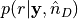
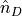
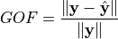
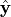
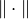
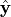
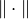
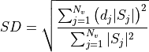
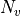
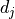

sesameeg.Sesame¶
- class sesameeg.Sesame(source_space, lead_field, data, n_parts=100, s_min=None, s_max=None, n_matrix=None, np_matrix=None, noise_std=None, dip_mom_std=None, fixed_ori=False, radius=None, neigh_std=None, prior_locs=None, subsample=None, hyper_q=True, lam=0.25, max_n_dips=10, fourier=False, verbose=False, **kwargs)[source]¶
Sequential Semi-Analytic Monte-Carlo Estimator (SESAME).
- Parameters:
- source_space
ndarrayoffloat, shape (n_verts, 3) The coordinates of the points in the brain discretization.
- lead_field
ndarrayoffloat, shape (n_sens, n_comp*n_verts) The lead field matrix. (if
fixed_ori=Trueit must ben_comp = 1; iffixed_ori=Falseit must ben_comp = 3)- data
ndarrayoffloat, shape (n_sens, n_ist) The MEEG data;
n_sensis the number of sensors andn_istis the number of time-points or of frequencies.- n_parts
int The number of particles forming the empirical pdf.
- s_min
int The first analyzed sample in the data array.
- s_max
int The last analyzed sample in the data array.
- n_matrix
ndarrayofint, shape (n_verts, n_max_neigh) | None The set of neighbours of each point in the brain discretization. If None, it is automatically computed.
n_max_neighis the cardinality of the biggest set.- np_matrix
ndarrayoffloat, shape (n_verts, n_max_neigh) | None The neighbours’ probabilities. If None, it is automatically computed.
- noise_std
float| None The standard deviation of the noise distribution. If None, it is estimated from the data.
- dip_mom_std
float| None The standard deviation of the prior pdf on the dipole moment. If None, it is estimated from the forward model and the data.
- fixed_ori
bool If True, the forward solution is assumed to be computed in the surface-based source coordinate system.
- radius
float| None The maximum distance in cm between two neighbouring vertices of the brain discretization. If None,
radiusis set to 1 cm.- neigh_std
float| None The standard deviation of the probability distribution of neighbours. If None,
neighb_stdis set to radius/2.- prior_locs
ndarrayoffloat, shape (n_vert) | None The prior probability of source location. If None, a uniform prior probability is used. Default is None.
- subsample
int| None The step used to subsample the data. If None no subsampling is applied.
- hyper_q
bool If True, a hyperprior pdf on the dipole moment std will be used.
- top_min
float| None First topography to be included in the segment of data to be analyzed. It is meant to be expressed either in seconds in the time domain or in Hertz in the frequency domain. If None, it is set to the first topography of the input data.
- top_max
float| None Last topography to be included in the segment of data to be analyzed. It is meant to be expressed either in seconds in the time domain or in Hertz in the frequency domain. If None, it is set to the last topography of the input data.
- lam
float The parameter of the Poisson prior pdf on the number of dipoles.
- max_n_dips
int The maximum number of dipoles allowed in a particle.
- fourier
bool If True, data are converted to the frequency domain.
- verbose
bool If True, increase verbose level.
- **kwargs
Additional keyword arguments are passed to the Sesame constructor.
- source_space
- Attributes:
- dip_mom_std
float The standard deviation of the prior on the dipole moment.
- distance_matrix
ndarrayoffloat, shape (n_verts x n_verts) The Euclidean distance between the points in the brain discretization.
- est_dip_moms
ndarrayoffloat, shape (n_ist x (n_comp*est_n_dips[-1])) | None The sources’ moments estimated at the last iteration. (n_comp = 1, if fixed orientation, 3, if free orientation) If None, moments can be estimated by calling
compute_dip_mom()- est_locs
listofndarrayofint The source space grid points indices in which a source is estimated.
- est_n_dips
listofint The estimated number of dipoles.
- fourier
bool If True, data are in the frequency domain.
- hyper_q
bool If True use hyperprior on dipole moment std.
- lam
float The parameter of the Poisson prior pdf on the number of dipoles.
- lead_field
ndarrayoffloat, shape (n_sens x n_comp*n_verts) The leadfield matrix. (
n_comp = 1iffixed_ori=True;n_comp = 3iffixed_ori=False)- max_n_dips
int The maximum number of dipoles allowed in a particle.
- model_sel
listofndarrayoffloat The model selection, i.e. the posterior distribution on the number of dipoles.
- n_verts
int The number of points forming the brain discretization.
- n_parts
int The number of particles forming the empirical pdf.
- neigh
ndarrayofint, shape (n_vert, n_max_neigh) The set of neighbours of each point in the brain discretization. n_max_neigh is the cardinality of the biggest set.
- neigh_p
ndarrayoffloat, shape (n_vert, n_max_neigh) The neighbours’ probabilities.
- neigh_std
float The standard deviation used to compute the neigh_p matrix.
- noise_std
float The standard deviation of the noise distribution.
- pmap
listofndarrayoffloat, shape (est_n_dips, n_verts) Posterior probability map.
- posteriorinstance of
EmpPdf The empirical pdf approximated by the particles at each iteration.
- prior_locs
ndarrayoffloat, shape (n_verts, ) | None The prior probability of active source locations. If None, each source space grid point is assigned a uniform prior probability.
- r_data
ndarrayoffloat, shape (n_sens, n_ist) The real part of the data; n_sens is the number of sensors and n_ist is the number of time-points or of frequencies.
- radius
float The radius used to compute the neighbours.
- _resample_it
listofint The iterations during which a resampling step has been performed
- s_min
int The first sample of the segment of data that are analyzed.
- s_max
int The last sample of the segment of data that are analyzed.
- source_space
ndarrayoffloat, shape (n_verts, 3) The coordinates of the points in the brain discretization.
- subsample
int| None The step used to subsample the data.
- data_times
ndarray Time vector in seconds. Only when instantiated by means of
prepare_sesame()and whenfourier=False- data_freqs
ndarray Frequency vector in Hertz. Only when instantiated by means of
prepare_sesame()and whenfourier=True- forwardinstance of
Forward The forward solution. Only when instantiated by means of
prepare_sesame()- subject
str Subject name in Freesurfer subjects dir. Only when instantiated by means of
prepare_sesame().- subjects_dir
str| None If not None, this directory will be used as the subjects directory instead of the value set using the SUBJECTS_DIR environment variable. Only when instantiated by means of
prepare_sesame()- trans_matrixinstance of
Transform MRI<->Head coordinate transformation. Only when instantiated by means of
prepare_sesame()
- dip_mom_std
- apply_sesame(estimate_all=False, estimate_dip_mom=True)[source]¶
Apply SESAME on MEEG data and compute point estimates.
- Parameters:
- compute_stc()[source]¶
Compute and export in an .stc file the posterior pdf , being  the estimated number of sources. For each point
 in the brain discretization,
is the probability of a
source being located in .
in the brain discretization,
is the probability of a
source being located in .- Parameters:
- subject
str| None The subject name.
- subject
- Returns:
- stc
SourceEstimate|VolSourceEstimate The source estimate object containing the posterior map of the dipoles’ location.
- stc
- goodness_of_fit()[source]¶
Evaluate the estimated configuration of dipoles. The goodness of fit (GOF) with the recorded data is defined as

where
 is the recorded data,
 is the field generated by the
estimated configuration of dipoles, and 
is the Frobenius norm.
is the recorded data,
 is the field generated by the
estimated configuration of dipoles, and 
is the Frobenius norm.- Returns:
- gof
float The goodness of fit with the recorded data.
- gof
- plot_sources(plot_kwargs=None, savepath=None, save_kwargs=None, true_sources=None, force_open=False)[source]¶
Plot the estimated sources. The default behaviour of the method is the following:
if
Sesamehas been instantiated throughprepare_sesame(), it visualizes the posterior map of the dipoles’ location and the estimated sourceson the inflated brain, if
Sesame.forwardis of kindsurface;on the MRI, if
Sesame.forwardis of kindvolume.
if
Sesamehas been instantiated throughSesame, it visualizes the posterior map of the dipoles’ location and the estimated sources as aPolyDataobject.
- Parameters:
- plot_kwargs
dict| None Additional arguments to
plot_source_estimates()orplot_stat_map()(e.g., dict(surface=’white’)).- savepath
str| None File path to write image to. If None, no image is written.
- save_kwargs
dict| None Additional arguments to
screenshot()orsavefig().- true_sources
ndarray| None In simulation settings, indexes of source space points in which true sources are located.
- force_open
bool If True, force the image to stay open.
- plot_kwargs
- save_h5(fpath, sbj=None, sbj_viz=None, data_path=None, fwd_path=None, cov_path=None, src_path=None, lf_path=None)[source]¶
Save SESAME result to an HDF5 file.
- Parameters:
- fpath
str The path to the save file.
- sbj
str| None The subject name.
- sbj_viz
str| None The name of the subject’s FreeSurfer folder.
- data_path
str| None The path to the data file.
- fwd_path
str| None The path to the forward solution file.
- cov_path
str| None The path to the noise covariance file.
- src_path
str| None The path to the source space file.
- lf_path
str| None The path to the leadfield matrix file.
- fpath
- save_pkl(fpath, sbj=None, sbj_viz=None, data_path=None, fwd_path=None, cov_path=None, src_path=None, lf_path=None, save_all=False)[source]¶
Save SESAME result to a Python pickle file.
- Parameters:
- fpath
str The path to the save file.
- sbj
str| None The subject name.
- sbj_viz
str| None The name of the subject’s FreeSurfer folder.
- data_path
str| None The path to the data file.
- fwd_path
str| None The path to the forward solution file.
- cov_path
str| None The path to the noise covariance file.
- src_path
str| None The path to the source space file.
- lf_path
str| None The path to the leadfield matrix file.
- save_all
bool If True, save the data and the forward model. Default to False.
- fpath
- source_dispersion()[source]¶
Compute the Source Dispersion measure to quantify the spatial dispersion of the posterior probability map. It is defined as

where  is the number of voxels,  is the distance between the
 -th voxel
and the nearest estimated dipole location and
-th voxel
and the nearest estimated dipole location and  is the value of the cortical map at
the -th voxel.
is the value of the cortical map at
the -th voxel.- Returns:
- sd
float The Source Dispersion of SESAME result
- sd
Examples using sesameeg.Sesame¶
Compute SESAME inverse solution on evoked data
Compute SESAME inverse solution on evoked data with source constraints
Compute SESAME inverse solution on evoked data with given source location prior
Compute SESAME inverse solution on evoked data in volume source space
Compute SESAME inverse solution on simulated data in the frequency domain